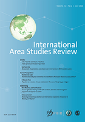
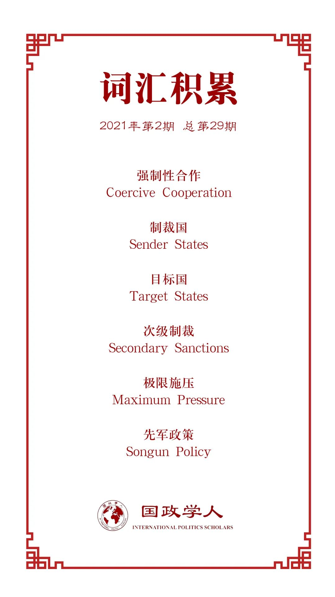

收录于合集

作品简介
【作者】 Woo-Jun Min，韩国延世大学国际研究研究生部（无照片）
Sukhee Han，现为韩国延世大学中国研究教授。他曾在北京大学政府学院任教两年，并在中国社会科学院亚太研究所担任访问学者。韩教授的研究领域为中国安全和外交政策以及中美、朝韩的双边关系。
【编译】 扎西旺姆（剑桥大学亚洲与中东研究硕士，国政学人编译员）
【校对】 陈勇
【审核】 谢菁
【排版】 胡蝶
【美编 】李九阳
【来源】 Min, Woo-Jun, and Sukhee Han. “Economic sanctions against North Korea: The pivotal role of US–China cooperation.” International Area Studies Review 23.2 (2020): 177-193.
【归档】 《国际关系前沿》2021年第2期，总第29期。
期刊简介

Source:https://journals-sagepub-com.ezp.lib.cam.ac.uk/description/ias
International Area Studies Review《国际区域研究评论》成立于1997年，是Sage出版公司代表韩国外国语大学国际地区研究中心和奥斯陆和平研究所（PRIO）出版的经同行评议的季刊。该季刊发表关于国际政治、经济、文化、社会学、法律和艺术等方面高质量的理论、分析及实证文章，旨在为国际区域研究的发展做贡献。其2018年的影响因子为0.44。
对朝经济制裁：中美合作的关键作用
Economic Sanctions against North Korea: The Pivotal Role of US–China Cooperation
Sukhee Han
内容提要
2018年初，朝鲜停止了远程核计划和弹道导弹计划，并宣布愿意实现无核化。此后不久，朝鲜便与包括美国、中国和韩国在内的国家进行了接触。这种突然的行为变化标志着金正恩领导下的六年极端孤立状态的结束。为了解释朝鲜为何决定接触，本研究考察了2006-2018年美国根据极限施压政策对朝鲜实施的经济制裁，其中部分制裁是与中国合作进行的。研究结果表明，2006年至2016年经济制裁无效的原因有两个：一是中美之间缺乏合作，二是中国援助朝鲜的政策。在2006-2016年期间，中国和朝鲜有着共同的价值观和大额的贸易量，而中美之间没有明显的合作迹象。然而，随着中朝贸易在2017年末及2018年初开始减少，中美之间出现了合作的迹象，朝鲜的行为也发生了变化。作者认为，朝鲜来到谈判桌前主要是为了解除经济制裁，而中美之间的合作加强了这种制裁。经济压力的增加最终迫使朝鲜与美国、中国和韩国的关系正常化。
文章导读
01
引言
许多学者和分析人士认为，对朝经济制裁自实施以来或失败，或无效。过去的经济制裁既没有实现无核化，也没有实现渐进式的接触。阻碍经济制裁的一个因素是中国与朝鲜间强大的贸易关系。中国慷慨的财政支持和贸易使得以前的制裁无效；鉴于朝鲜强大的军事实力和中国的支持，朝鲜没有什么可害怕的。作者认为，要想达到最佳的经济制裁效果，美国首先要想办法迫使中国主动施加额外压力。因此，美国总统特朗普及其政府在2017年底提出了一系列极为严厉的经济制裁，同时还提出了极限施压政策(maximum pressure)。这些措施禁止所有与朝鲜有关联的企业、个人和船只利用美国市场，以此阻止朝鲜获得外国金融服务。美国的压力不仅让朝鲜陷入困境，也迫使中国遵守美国的要求，减少与朝鲜的贸易往来。在短短几个月内，朝鲜便以要求谈判作为回应。
为了解朝鲜为何在2018年开始谈判，本文旨在回答两个问题。第一，为什么2006-2016年对朝鲜的经济制裁无效？第二，为什么最近对朝鲜的制裁是有效的？本文提出两个论点来回答这些研究问题。
第一个论点是，朝鲜之所以能够承受2006-2016年的经济制裁，是因为中国不愿意执行制裁，也不愿意施加额外的压力。在此期间，中国没有承诺对朝鲜进行经济制裁，而是继续与朝鲜进行贸易。原因主要有两方面：首先，朝鲜是中国和韩国之间的缓冲区，而韩国是数千名美军和海军陆战队的所在地。其次，中国与朝鲜的经济贸易旨在防止金氏政权垮台，因为这会造成大量难民涌入中国。
第二个论点是，美国的次级制裁（secondary sanctions）迫使中国配合美国对朝实施制裁，降低了朝鲜的经济稳定性。通过次级制裁，美国得以阻止众多与朝鲜有关联的中国企业参与美国市场。实际上，美国通过消除资产和阻止中国企业进入美国市场的措施来惩罚中国对朝鲜的援助。 通过实施次级制裁，美国创造了一种强制合作（coercive cooperation）的形式，迫使中国支持美国对朝鲜的制裁。 虽然单靠经济制裁并不总能达到政治目的，尤其是在对付像朝鲜这样孤立的国家时，但如果与额外的外部压力相结合，经济制裁可以成为一种有效的外交工具。出于这些原因，对朝鲜的经济制裁最终能够迫使金政府坐到谈判桌前。通过这两个论点，本文将论证美国和中国等关键国家之间的合作在提高经济制裁效力方面的重要性，以及中国在遏制朝鲜方面发挥的关键作用。
02
理论
朝鲜行为的变化可以理解为国家互动和合作的产物。如果制裁国（sender state）和目标国(target state)的主要贸易伙伴合作，经济制裁就更有可能成功。如果没有这种合作，经济制裁就不太可能成功。如果目标国与其主要贸易伙伴继续进行贸易，经济制裁就不太可能有效。当目标国的主要贸易伙伴也实施经济制裁时，经济制裁的有效性就会增加。目标国与其贸易伙伴之间的贸易水平至关重要。无论制裁国对目标国实施多少惩罚性制裁，只要目标国的主要贸易伙伴与目标国维持足够程度的贸易量，这些制裁的影响便微乎其微。在这种情况下，什么样的合作才有可能成为对朝鲜经济制裁的最有效支撑？强制（coercion）, 又称强制性合作(coercive cooperation)，被认为是有效的。强制性合作可以在当一个国家有一个无条件的制裁策略，而其他国家不愿意加入时实施。制裁国实施制裁，并迫使其他国家提供支持。在此情况下，尽管制裁的成本很高，但制裁国还是实施了制裁，以增加成功的可能性。制裁通常会被提交给国际机构，以说服其他国家实施类似的措施。在开始时，强制性合作往往会产生密切的合作，然而这种合作的程度会随着时间的推移而递减。
在对朝鲜实施制裁的背景下，制裁的发起国是美国，目标的主要贸易伙伴是中国 。制裁的效果预计会有很大差异，取决于中美合作的密切程度。 如果中国与美国合作，那么经济制裁很可能是有效的。中国过去和现在都是朝鲜的主要贸易伙伴，这使中国具有很大的影响力。因此，对美国来说，中国的合作至关重要。制裁国与目标国主要贸易伙伴之间的合作增加了经济制裁成功的可能性，因为关键国家之间的合作可以最大限度地扩大目标国所遭受的损害，并降低其逃避经济制裁的可能性。
基于这一理论背景，本文提出以下假设。
假设1：如果目标国的主要贸易伙伴（中国）没有与制裁国（美国）合作，那么在2016年之前，中朝之间的贸易量和贸易额都会增加。
假设2：如果制裁国（美国）与目标国主要贸易伙伴（中国）之间进行了强制合作，那么经济制裁的有效性就会增加，导致中国与朝鲜之间的贸易量和贸易额在2017年至2018年减少。
03
美国极限施压：次级制裁
为了迫使朝鲜坐到谈判桌前，特朗普政府施加了两种压力：军事胁迫（military coercion）和次级制裁。这两类压力最终导致了极限施压政策的形成。第一部分是军事胁迫，对朝鲜实施重大而可信的军事威胁，以消除美国及其盟友面临的危险。第二部分是次级制裁，通过阻止所有第三方与朝鲜进行贸易，并迫使中国对朝鲜施加额外的压力，对朝鲜实施严重的金融封锁。本研究排除了军事胁迫的策略，因为与次级制裁相比，军事胁迫的效力被认为是不确定的。首先，根据先军政策，朝鲜大约有120万常备军人，该政策将所有资源优先用于军事。其陆、海、空三军部队处于防御和进攻行动的有利位置，并装备了虽过时但常规的军事系统。此外，朝鲜还以核武器的形式在非对称能力上投入了大量资金。朝鲜很清楚，美国虽在军事实力上占上风，但在面对有核武器的朝鲜时，难以轻举妄动。其次，根据中朝1961年签署的《友好合作互助条约》（Mutual Aid and Cooperation Friendship Treaty），中国和朝鲜将相互抵御来自外部势力的侵略，除非任何一国首先发起进攻。由于将两国联系在一起的条约是防御性条约，而非进攻性条约，这使得美国很难通过军事威胁获得任何显著的结果。最后，当金正恩首次正式访华时，‘唇齿相依’（lips and teeth）一词再次出现。中朝之间唇齿相依的关系意味着中朝两国都需要对方。作者认为，中国正在向外界以及朝鲜传递一个信息，即朝鲜是中国的缓冲区，这是中国永远不会妥协的。
是什么让最近的经济制裁如此有效？美国是如何获得中国的合作的？作者认为，在这两个案例中，二次制裁构成了关键因素，因为它们增强了对朝制裁的有效性，并帮助美国获得了中国的合作。虽然朝鲜一直试图实现自力更生，但它实际上从未做到这一点。它过去从美国和韩国获得了数十亿美元的财政援助，也从与中国的贸易和经由中国金融机构得到的现金流中获益匪浅。因此，二次制裁背后的主要动机是切断金氏政权的外部资源。为了达到这个结果，美国有必要对中国实施次级制裁，以鼓励中美共同遏制朝鲜。
美国一直要求所有国家完全停止与朝鲜的贸易和商业往来。美国的次级制裁既是为了阻碍朝鲜非法金融网络和未注册贸易的运作，也是为了迫使中国进行合作。通过次级制裁来极限施压的政策始于特朗普总统于2017年9月20日签署的13810号行政命令。该命令禁止所有机构与朝鲜进行任何金融活动。任何位于美国境内或来源于美国的资金以及美国人或美国公司拥有的外国银行账户都不能用于与朝鲜的交易。禁止对朝鲜进行投资、贸易、融资以及直接或间接向朝鲜出口货物、技术或服务。白宫表示，外国金融机构必须在与美国做生意和为与朝鲜或其指定支持者的贸易提供便利之间做出选择。
在两个月内，丹东银行和丹东锦祥贸易有限公司（Dandong Jinxiang Trade company）被发现与朝鲜从事违禁业务，并被禁止参与美国金融市场。这两家公司曾与朝鲜进行价值数百万美元的交易。在已查明的718名与朝鲜有关的个人、实体和船只中，有23家中国公司被列入外国资产管制处的封锁名单。所有这些公司都被美国财政部认定为与朝鲜有业务往来，而朝鲜从中赚取了数十亿美元的利润，违反了美国的经济制裁。被列入名单的企业必须遵守相关法律、行政命令和其他措施中的禁令。违反这些禁令的企业将面临刑事起诉。换句话说，美国名单上的所有中国企业都被打上了罪犯的标签；这影响了其他中国企业和中国的国际声誉。
作者认为，面对日益增加的压力，中国只能与美国合作。作为联合国安理会常任理事国，中国扶持朝鲜经济的事实降低了自己的国际地位，也阻碍了中国成为关键国际角色的努力。合作最显著的标志是，中国央行下令所有中国金融机构停止与朝鲜合作。央行表示，涉朝业务的管理目前已经成为国家层面的政治和国家安全问题，命令所有中国银行停止向那些与朝鲜开展业务的银行提供贷款，还向其他国家警告了与朝鲜做生意的危险。次级制裁的成效不仅仅是阻绝了朝鲜的外国资金来源，以及促使中国合作执行对朝制裁，还让中国在2017-2018年大幅减少了对朝贸易。
04
2006年至2016年中朝贸易情况
中国坚信，保持朝鲜的稳定符合中国的国家安全利益。从中国的角度看，联合国提出的经济制裁并没有得到充分支持，而且存在很多漏洞。由于中国与朝鲜的金融和商业联系，以及部分制裁（禁止煤炭、矿产和燃料）中所列的天然材料的转让，此前的联合国决议未得到充分执行。
中国继续与朝鲜进行贸易，主要有两个原因。首先，中国最担心的是朝鲜崩溃的可能性。金氏政权的崩溃意味着朝鲜社会的崩溃。一旦出现严重的动荡，中国将面临成千上万甚至上百万的难民试图越境的情况。其次，朝鲜在中国和与美国紧密结盟的韩国之间起到了缓冲区的作用。如果朝鲜崩溃，朝韩两国有可能在亲美的韩国政府下实现统一。由此，美军就可以在中国边境一带驻扎，这也是冷战以来中国的一大担忧。由于2006年联合国和美日欧单方面实施制裁，随着时间的推移，朝鲜对中国的依赖程度稳步上升，以至于2016年中国占朝鲜贸易额的92.7%。2014年以来，中国占朝鲜对外贸易的90%以上。12年来，中国始终是朝鲜最大的贸易伙伴。
05
2017-2018年中国应对美国极限施压的对策
为了应对美国的极限施压政策，中国对朝鲜实施了更严格的金融封锁，导致贸易额下降，加大了对朝鲜的压力。中国的进出口总值大幅下降。如此大的跌幅以前从未发生过，这清楚地表明中国不仅在支持美国的经济制裁，而且也在对朝鲜施加自己的压力。
虽然朝鲜对中国的出口减少了，但从中国的进口却增加了。但这并不意味着朝鲜的经济在增长，因为其一些必需品的进口量实际上是减少的。2017年之前，中国坚持经济制裁，并在一定程度上履行了责任。虽然出于人道主义原因，中国不能完全禁止联合国决议所针对的一些产品和货物的转运，但中国确实大幅减少了这些货物的贸易。截至2018年，中朝之间的贸易额大幅下降。每月下降的比例至少为50%；贸易总额下降到17亿美元。虽然中国并没有停止与朝鲜的所有贸易，但它表明它正在坚持经济制裁。这些行动迫使朝鲜在2018年全年进行谈判。美国胁迫中国合作，以更好地规范和促进经济制裁。
中国的制裁对与朝鲜接壤的中国地区产生了严重影响。受影响最直接的城市是辽宁省的丹东和大连。丹东和大连是与朝鲜贸易的重要枢纽，近60%的中朝贸易经过丹东。贸易限制给贸易者、居民和店主造成了困扰。所有的朝鲜进口都被禁止，中国商品对朝鲜的出口也受到限制，严重影响了丹东和大连的经济。丹东和大连的中国企业因为无法支付员工工资而不得不解雇员工。这些事件发生在2017年9月之后。同时，贸易限制催生了中朝之间的非法贸易。不断有关于非正规贸易和非法雇佣朝鲜工人的报道。即便如此，钢铁、汽车、纺织品、海产品和燃料等商品贸易的减少，也给朝鲜带来了巨大的损失。
06
结论
2006-2017年中朝贸易数据揭示了中国在对朝鲜实施经济制裁成功中的重要性。鉴于朝鲜在地理、战略和政治上对中国的重要性，中国对朝鲜的支持不足为奇。此外，对朝鲜的制裁并没有完全禁止中国与朝鲜的贸易。很难说中国以往没有坚持经济制裁，因为中国在技术上确实遵守了制裁的规定和限制。然而，中国不愿意超越制裁所要求的最低限度，中美也并未合作对朝鲜施加压力，这反过来又削弱了经济制裁的影响。
作者认为，作为其极限施压战略的一部分，美国的次级制裁，采用了将与朝鲜相关联的中国企业排除在美国市场之外的强制性合作模式，导致了中朝贸易的下降和中国经济制裁的实施。中美之间的强制性合作所产生的额外压力迫使朝鲜出席峰会，就缓和围绕其核武器开发项目日益紧张的局势进行谈判。然而，鉴于最近的贸易战所引发的中美关系日益紧张，很难知道中国是否会继续满足美国对朝鲜施加额外压力的要求。如果没有中国的合作以及美国的施压，朝鲜不太可能再像2018年那样展现合作意愿。
译者评述
本文作者引入了次级制裁的概念，通过考察2006年-2018年美国极限施压下的对朝制裁历程，探讨了对朝实施有效制裁的关键因素。作者认为，中美之间基于共识的合作以及中国对朝实施的实质性制裁是朝鲜在2018年一改态度，愿意以停止核试验来推进和谈进程的重要原因。而其中发挥有效作用的，是制裁国与目标国主要贸易伙伴进行的强制性合作，即美国以强制性合作令中国实施制裁的结果。译者认为，作者的观点有以下三个层面需重新审视：
其一，作者“强制性”的假设是建立在制裁国与目标国主要贸易伙伴不存在主要共识的基础上的，由此制裁国才需要以强制性合作的方式，而非加强共识领域的合作，来推进后者制裁行为的实施。应用到中美对朝制裁的案例之中，作者所认为的中国对朝鲜制裁仅仅是美国强制性合作的结果，是一个过于简单的解读。需要注意的是，中国在朝核问题的基本立场是地区的安全稳定以及和以和平手段实现无核化。然而，朝鲜2016年至2017年连续的核试验将半岛的安全危机推向了新的高潮，美日韩的激烈反应（有关萨德部署的争议）以及朝鲜政权的脆弱性，都严重威胁了中国的边境及区域性的战略安全。同时，作为朝鲜的主要贸易伙伴，中国不仅面临着来自美国以及国际的压力，其本身也有着防止核武器扩散及实现朝鲜无核化的长期目标。所以中美在该议题上存在基本的共识，强制性合作是否存在实质效力值得探讨。除此之外，有关中国加重制裁动机的解读，中国国内政治对于朝鲜核试验的消极看法以及对于制裁行为的接受度也是近来学者们关注的因素（Li and Ji 2020）。总的来说，中国2016年开始对朝鲜施加更加严厉的制裁，是综合原因之下的考量，以尽快让朝鲜回到协商的谈判桌上来。美国次级制裁在多大程度上发挥了作用还有待商讨。
其二，作者假设目标国主要贸易伙伴只要对目标国实施制裁，后者便不得不改变政策或者做出妥协。这是基于目标国对于经济利益的高度重视之下的合理假设。然而目标国若与其贸易伙伴处于低杠杆状态，即贸易伙伴因其他原因无法对目标国实行完全制裁行为或者目标国对于战略利益的重视远高于经济损失的认识之下，实施制裁的效力在很大程度上便受到了挑战。中国作为朝鲜的主要贸易国家，虽然对于朝鲜存在一定的影响力，但鉴于中朝的地缘政治利益，美日韩同盟的区域安全威胁以及朝鲜的核实力来看，中朝之间处于一个有限杠杆的状态(Zhang and Ginger 2019)。同时，由于朝鲜自主思想之下对外来干预的极度警惕，在一定条件下，中国对朝鲜的完全孤立及施压可能还会使朝鲜更加抵制中国的影响，进一步恶化区域的安全形势（Lee at el 2020）。在此情况下，中国保留对朝进行严肃制裁，并以经济合作以及外交协商来引导对话趋势也是在权衡了有限杠杆及区域安全形势下的结果。译者并不是否定中国制裁行为参与的重要性，没有中国的制裁以及中美在此议题上的对话，半岛形势可能会更加严峻。但作者关于中国对朝鲜绝对影响力的认识需要进一步审视。
其三，从朝韩半岛的实际互动来说，作者的构想脱离了另一关键因素，即朝鲜核实力的变化。在第六次核试验以及火星-15号洲际导弹的成功发射之后，朝鲜确认了可以发射到达美洲大陆的核实力，这让其在与美国谈判之时有了更多的筹码和空间，是朝鲜表达合作意愿的重要条件之一。在核实力未成熟之前，国际对于朝鲜的制裁反而成为了其巩固国内政权合法性，集结一切力量发展军事实力的反向促进力。所以，在将2017年作为关键节点讨论朝鲜转变态度的原因之时，朝鲜核实力的变化如何在其中发挥作用是难以避开的话题。
本文作者引入的次级制裁的概念是一个看待中美朝三方互动的新视角，只是其假说在概念界定以及具体应用的方面需要进一步思考，才能更契合地讨论其所研究的案例。
参考文献
[1]Lee, Dong Sun, Lordanka Alexandrova, and Zhao Yihei. “The Chinese failure to disarm North Korea: Geographical proximity, US unipolarity, and alliance restraint.” Contemporary Security Policy 41.4 (2020): 587-609.
[2]Zhang, Weiqi, and Ginger L. Denton. “The North Korean Nuclear Dilemma: Does China Have Leverage?” Journal of Asian Security and International Affairs 6.2 (2019): 107-135.
[3]Li, Wenxin, and Ji Young Kim. “Not a blood alliance anymore: China’s evolving policy toward UN sanctions on North Korea.” Contemporary Security Policy 41.4 (2020): 610-631.
词汇整理

文章观点不代表本平台观点，本平台评译分享的文章均出于专业学习之用, 不以任何盈利为目的，内容主要呈现对原文的介绍，原文内容请通过各高校购买的数据库自行下载。

好好学习，天天“在看”

国政学人
支持学术公益与知识传播
微信扫一扫赞赏作者 __赞赏
已喜欢，对作者说句悄悄话
取消 __
发送给作者
发送
最多40字，当前共字
上一页 1/3 下一页
长按二维码向我转账
支持学术公益与知识传播
受苹果公司新规定影响，微信 iOS 版的赞赏功能被关闭，可通过二维码转账支持公众号。